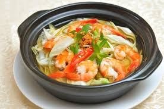

Canh chua tôm bông so đũaa

- Khẩu phần 4
- Chuẩn bị 10 phút
- Thực hiện 10 phút
Nguyên liệu
- 300g tôm sú, cắt bỏ đầu đuôi, rửa sạch, để ráo
- 300g bông so đũa, rửa sạch, nhặt bỏ cuống và nhụy
cho khỏi đắng, để ráo.
- 2 trái cà chua, rửa sạch, cắt múi cau
- Hành lá, ngò gai, ngò om, rửa sạch cắt nhỏ
- Ớt sừng, rửa sạch, cắt khoanh
- Tỏi, bỏ vỏ, rửa sạch, bằm nhuyễn
- 750ml (3 chén) nước lọc để nấu canh
- Dầu ăn
- 1 gói Gia Vị Hoàn Chỉnh - Canh Chua cho món
canh chua ngon tuyệt hảo
Hướng dẫn thực hiện
- Phi dầu với tỏi bằm cho thơm, múc ra một ít để nấu canh xong nêm vào
canh cho thơm. Sau đó cho tôm sú vào xào săn.
- Thêm nước vào nấu sôi. Cho cà chua cắt múi cau vào nồi
- Nêm 1 gói Gia Vị Hoàn Chỉnh - Canh Chua cho món canh chua ngon
tuyệt hảo
- Cho tiếp bông so đũa vào, tắt lửa ngay để bông giòn, không bị nát
- Múc canh ra tô, rắc ngò gai, rau om, ớt và dầu tỏi vào để món canh dậy
mùi và đúng vị canh chua hơn.
- Dùng nóng canh với cơm hoặc bún tươi đều được